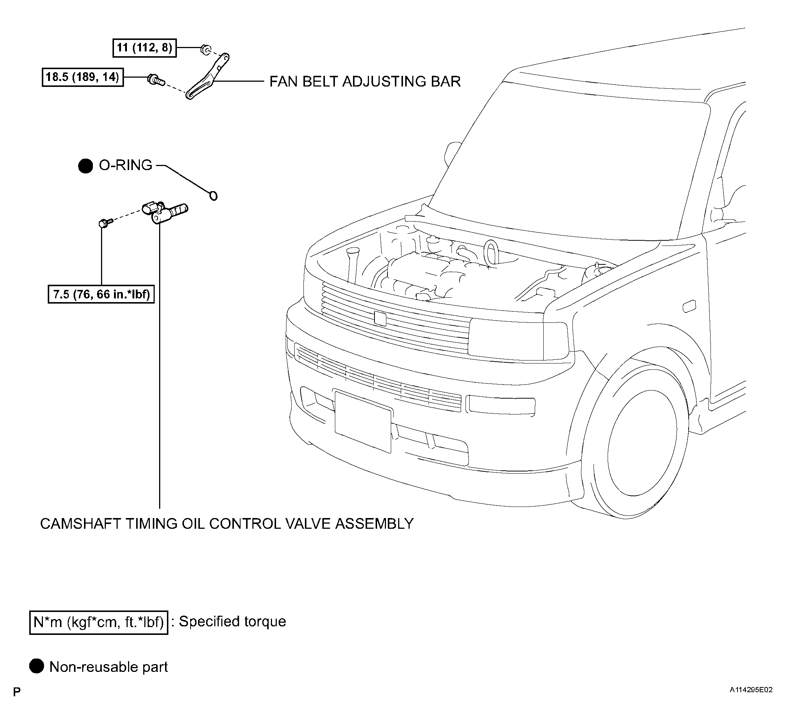

Home
>>
Scion
>>
2006
>>
xB Standard
>>
Repair and Diagnosis (Single Page)
>>
Engine Performance
>>
Engine Control Systems
>>
Engine Control System (1NZ-FE)
>>
Camshaft Timing Oil Control Valve Assembly
>>
Components
Camshaft Timing Oil Control Valve Assembly: Components
Fig 1: Identifying Camshaft Timing Oil Control Valve Assembly Components

Courtesy of © TOYOTA, LICENSE AGREEMENT TMS1002